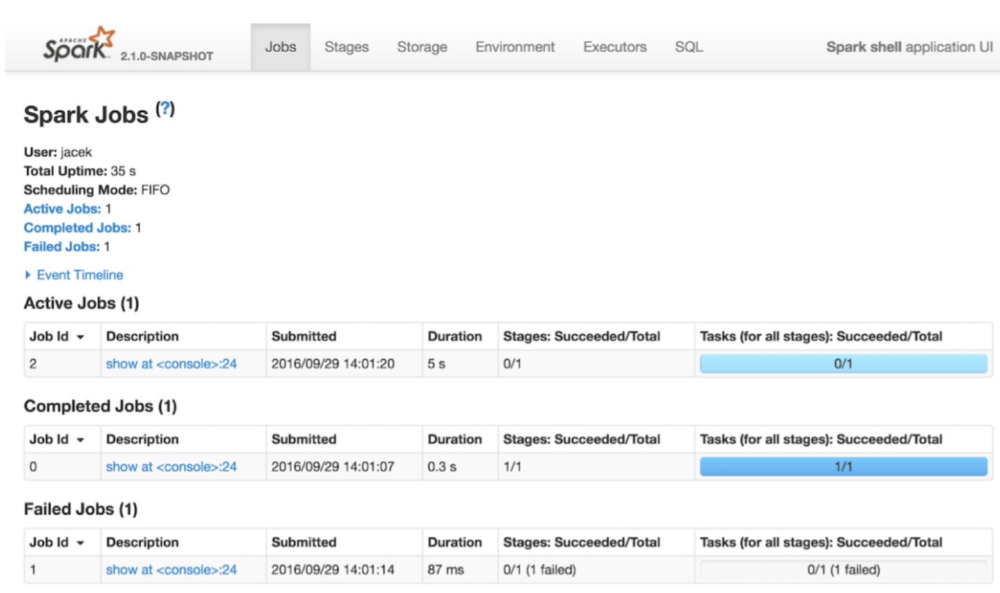

pyspark
Python 3.10.12 (main, Nov 20 2023, 15:14:05) [GCC 11.4.0] on linux
Type "help", "copyright", "credits" or "license" for more information.
Setting default log level to "WARN".
To adjust logging level use sc.setLogLevel(newLevel).
Welcome to
____ __
/ __/__ ___ _____/ /__
_\ \/ _ \/ _ `/ __/ '_/
/__ / .__/\_,_/_/ /_/\_\ version 3.5.1
/_/
Using Python version 3.10.12 (main, Nov 20 2023 15:14:05)
Spark context Web UI available at https://url.au.m.mimecastprotect.com/s/w53DCXLWDDCX47koKuDi3FW4dEK?domain=10.0.2.15
Spark context available as 'sc' (master = local[*], app id = local-1713320306456).
SparkSession available as 'spark'.
spark <pyspark.sql.session.SparkSession object at 0x726c633ca740>
range1000 = spark.range(1000).toDF("number")
range1000.show(2) +------+ |number| +------+ | 0| | 1| +------+ only showing top 2 rows
lines = sc.textFile("https://url.au.m.mimecastprotect.com/s/jrFwCYW8EEtLDoj2lsVs1FxWIoc?domain=127.0.0.1")
lines.first()
'For the latest information about Hadoop, please visit our website at:'
lines.count()
7
lines.filter(lambda x: "apache" in x).collect()
[' https://url.au.m.mimecastprotect.com/s/-10FCZY166h57nX9ghxtDFBUwAc?domain=hadoop.apache.org/', ' https://url.au.m.mimecastprotect.com/s/m2IfC1WLwwtM6wLNGF1uOFVI5lF?domain=cwiki.apache.org/']
lines = sc.textFile("https://url.au.m.mimecastprotect.com/s/jrFwCYW8EEtLDoj2lsVs1FxWIoc?domain=127.0.0.1")
lines.collect() ['For the latest information about Hadoop, please visit our website at:', '', ' https://url.au.m.mimecastprotect.com/s/-10FCZY166h57nX9ghxtDFBUwAc?domain=hadoop.apache.org/', '', 'and our wiki, at:', '', ' https://url.au.m.mimecastprotect.com/s/m2IfC1WLwwtM6wLNGF1uOFVI5lF?domain=cwiki.apache.org/']
counters = lines.flatMap(lambda x: x.split()).countByValue()
for i, (word, count) in enumerate(counters.items()): ... print(word,count)
For 1 the 1 latest 1 information 1 about 1 Hadoop, 1 please 1 visit 1 our 2 ... ...
""SimpleApp.py"""
from pyspark.sql import SparkSession
logFile = "README.txt" # In home folder https://url.au.m.mimecastprotect.com/s/1KaGC2xMkktpVo0z3sXCEF5Nag3?domain=127.0.0.1
spark = SparkSession.builder.appName("SimpleApp").getOrCreate()
logData = spark.read.text(logFile).cache()
numAs = logData.filter(logData.value.contains('a')).count()
numBs = logData.filter(logData.value.contains('b')).count()
print("Lines with a: %i, lines with b: %i" % (numAs, numBs))
spark.stop()
$SPARK_HOME/bin/spark-submit --master local[4] SimpleApp.py
Lines with a: 4, lines with b: 1
hdfs dfs -cat /user/bigdata/README.txt
For the latest information about Hadoop, please visit our website at: https://url.au.m.mimecastprotect.com/s/-10FCZY166h57nX9ghxtDFBUwAc?domain=hadoop.apache.org/ and our wiki, at: https://url.au.m.mimecastprotect.com/s/m2IfC1WLwwtM6wLNGF1uOFVI5lF?domain=cwiki.apache.org/
"""AnotherApp.py"""
from pyspark import SparkConf, SparkContext
spark_conf = SparkConf()
sc = SparkContext(conf=spark_conf)
lines = sc.textFile("README.txt") # In home folder https://url.au.m.mimecastprotect.com/s/1KaGC2xMkktpVo0z3sXCEF5Nag3?domain=127.0.0.1
lineLengths = lines.map(lambda s: len(s))
totalLength = lineLengths.reduce(lambda a, b: a + b)
print(totalLength)
sc.stop()
$SPARK_HOME/bin/spark-submit --master local[4] AnotherApp.py
168
hdfs dfs -cat /user/bigdata/README.txt
For the latest information about Hadoop, please visit our website at: https://url.au.m.mimecastprotect.com/s/-10FCZY166h57nX9ghxtDFBUwAc?domain=hadoop.apache.org/ and our wiki, at: https://url.au.m.mimecastprotect.com/s/m2IfC1WLwwtM6wLNGF1uOFVI5lF?domain=cwiki.apache.org/

hdfs dfs -cat /user/bigdata/README.txt
lines = sc.textFile("README.txt")
words = lines.flatMap(lambda line: line.split(' '))
distinct_words = words.distinct() distinct_words.count()
a_words = words.filter(lambda word: word.startswith("a"))
sc.parallelize(['a', 'd', 'c', 'e', 'b']).sortBy(lambda x: x).collect()
sc.parallelize(['a', 'd', 'c', 'e', 'b']).sortBy(lambda x: -ord(x)).collect()
sc.parallelize([1, 2, 5, 3, 4]).sortBy(lambda x: -x).collect()
sc.parallelize([1, 2, 5, 3, 4]).sortBy(lambda x: x).collect()
sc.parallelize([('1', 3), ('2', 5), ('a', 1), ('b', 2), ('d', 4)]).sortBy(lambda x: x[0]).collect()
sc.parallelize([('1', 3), ('2', 5), ('a', 1), ('b', 2), ('d', 4)]).sortBy(lambda x: x[1]).collect()
sc.parallelize([('a', 1), ('b', 2), ('1', 3), ('d', 4), ('2', 5)]).sortByKey().first()
('1', 3)
sc.parallelize([('a', 1), ('b', 2), ('1', 3), ('d', 4), ('2', 5)]).sortByKey(True, 1).collect()
[('1', 3), ('2', 5), ('a', 1), ('b', 2), ('d', 4)]
sc.parallelize([('a', 1), ('b', 2), ('1', 3), ('d', 4), ('2', 5)]).sortByKey(True, 2).collect()
[('1', 3), ('2', 5), ('a', 1), ('b', 2), ('d', 4)]
tmp2 = [('Mary', 1), ('had', 2), ('a', 3), ('little', 4), ('lamb', 5)]
tmp2.extend([('whose', 6), ('fleece', 7), ('was', 8), ('white', 9)])
sc.parallelize(tmp2).sortByKey(True, 3, keyfunc=lambda k: k.lower()).collect()
[('a', 3), ('fleece', 7), ('had', 2), ('lamb', 5),...('white', 9), ('whose', 6)]
rdd = sc.parallelize(range(500), 1) rdd1, rdd2 = sc.parallelize(range(500), 1).randomSplit([2, 3], 17)
len(rdd1.collect() + rdd2.collect()) 500 150 < rdd1.count() < 250 True 250 < rdd2.count() < 350 True
from operator import add sc.parallelize([1, 2, 3, 4, 5]).reduce(add) 15
sc.parallelize((2 for _ in range(10))).map(lambda x: 1).cache().reduce(add) 10
sc.parallelize(["a b c","c d e"]).map(lambda line: line.split(" ")).collect()
[['a', 'b', 'c'], ['c', 'd', 'e']]
sc.parallelize(["a b c","c d e"]).flatMap(lambda line: line.split(" ")).collect()
['a', 'b', 'c', 'c', 'd', 'e']
def f(x):
print(x)
sc.parallelize([1, 2, 3, 4, 5]).foreach(f)
sc.parallelize([]).isEmpty() True sc.parallelize(["a"]).isEmpty() False
from operator import add sc.parallelize([1, 2, 3, 4, 5]).reduce(add) 15
sc.parallelize((2 for _ in range(10))).map(lambda x: 1).cache().reduce(add) 10
from operator import add
sorted(sc.parallelize([("a", 1), ("b", 1), ("a", 1)]).reduceByKey(add).collect())
[('a', 2), ('b', 1)]
result = sc.parallelize([1, 1, 2, 3, 5, 8]).groupBy(lambda x: x % 2) sorted([(x, sorted(y)) for (x, y) in result]) [(0, [2, 8]), (1, [1, 1, 3, 5])]
sorted(sc.parallelize([("a", 1), ("b", 1), ("a", 1)]).groupByKey().mapValues(len).collect())
[('a', 2), ('b', 1)]
sorted(sc.parallelize([("a", 1), ("b", 1), ("a", 1)]).groupByKey().mapValues(list).collect())
[('a', [1, 1]), ('b', [1])]
rdd1 = sc.parallelize([("a", 1), ("b", 4)])
rdd2 = sc.parallelize([("a", 2), ("a", 3)])
sorted(rdd1.join(rdd2).collect())
[('a', (1, 2)), ('a', (1, 3))]
rdd = sc.parallelize([1, 1, 2, 3]) rdd.union(rdd).collect() [1, 1, 2, 3, 1, 1, 2, 3]
rdd1 = sc.parallelize([1, 10, 2, 3, 4, 5]) rdd2 = sc.parallelize([1, 6, 2, 3, 7, 8]) rdd1.intersection(rdd2).collect() [2, 1, 3]
rdd1 = sc.parallelize([("a", 1), ("b", 4), ("b", 5), ("a", 3)])
rdd2 = sc.parallelize([("a", 3), ("c", None)])
sorted(rdd1.subtract(rdd2).collect())
[('a', 1), ('b', 4), ('b', 5)]
sqlDF = spark.sql("SELECT * FROM vpeople"))
sqlDF.show()
hdfs dfs -cat people.json
{"name":"James","age":25}
{"name":"Harry","age":24}
{"name":"Robin","age":50}
df = spark.read.load("people.json", format="json")
>>> df.show() +---+-----+ |age| name| +---+-----+ | 25|James| | 24|Harry| | 50|Robin| +---+-----+
df.printSchema() root |-- age: long (nullable = true) |-- name: string (nullable = true)
df.select("name").write.save("names", format="csv")
hdfs dfs -ls names
Found 2 items
-rw-r--r-- 1 bigdata supergroup 0 2026-04-20 13:59 names/_SUCCESS
-rw-r--r-- 1 bigdata supergroup 18 2026-04-20 13:59 names/part-00000-f1e3483e-810b-4be6-8875-
4587cb6be954-c000.csv
hdfs dfs -cat names/part* James Harry Robin
df = spark.read.load("examples/src/main/resources/users.parquet")
df.select("name", "favorite_color").write.save("namesAndFavColors.parquet")
people = spark.createDataFrame([
{"deptId": 1, "age": 40, "name": "Hyukjin Kwon", "gender": "M", "salary": 50},
{"deptId": 1, "age": 50, "name": "Takuya Ueshin", "gender": "M", "salary": 100},
{"deptId": 2, "age": 60, "name": "Xinrong Meng", "gender": "F", "salary": 150},
{"deptId": 3, "age": 20, "name": "Haejoon Lee", "gender": "M", "salary": 200}
])
department = spark.createDataFrame([
{"id": 1, "name": "PySpark"},
{"id": 2, "name": "ML"},
{"id": 3, "name": "Spark SQL"}
])
people.count()
df1 = people.filter(people.age > 50) df2 = people.where(df.age == 60)
df3 = people.filter('age > 30')
df4 = people.where('age = 60')
df5 = people.select('*')
df6 = people.select(people.name, (people.age + 10).alias('age'))
df7 = people.groupBy().avg()
df8 = people.groupBy("age").count()
df9 = people.groupBy("name").agg({"age": "sum"}).sort("name")
df10 = people.groupBy(people.name).max().sort("name")
df11 = people.groupBy(["name", people.age]).count().sort("name", "age")
df12 = spark.createDataFrame([(1, 'A'), (2, 'B')], ['id', 'value']) df13 = spark.createDataFrame([(3, 'C'), (4, 'D')], ['id', 'value']) df14 = df12.union(df13)
df15 = spark.createDataFrame([("a", 1), ("a", 1), ("b", 3), ("c", 4)], ["C1", "C2"])
df16 = spark.createDataFrame([("a", 1), ("a", 1), ("b", 3)], ["C1", "C2"])
df17 = df16.intersect(df15).sort(df16.C1.desc()).show()
df18 = spark.createDataFrame([("a", 1), ("a", 1), ("b", 3), ("c", 4)], ["C1", "C2"])
df19 = spark.createDataFrame([("a", 1), ("a", 1), ("b", 3)], ["C1", "C2"])
df20 = df18.subtract(df19).show()
from pyspark.sql import Row
from pyspark.sql.functions import desc
df1 = spark.createDataFrame([(2, "Alice"), (5, "Bob")]).toDF("age", "name")
df2 = spark.createDataFrame([Row(height=80, name="Tom"), Row(height=85, name="Bob")])
df3 = spark.createDataFrame([Row(age=2, name="Alice"), Row(age=5, name="Bob")])
df4 = spark.createDataFrame([Row(age=10, height=80, name="Alice"),
Row(age=5, height=None, name="Bob"),
Row(age=None, height=None, name="Tom"),
Row(age=None, height=None, name=None) ])
df21 = df1.join(df2, 'name').select(df2.name, df2.height) df22 = df1.join(df4, ['name', 'age']).select(df4.name, df4.age).show()
df23 = df1.join(df2, df1.name == df2.name, 'outer')
.select(df2.name, df2.height).sort(desc("name")).
df24 = df.join(df2, 'name', 'outer').select('name', 'height').sort(desc("name")).show()
people.createOrReplaceTempView("vpeople")
sqlDF = spark.sql("SELECT * FROM vpeople")
sqlDF.show()